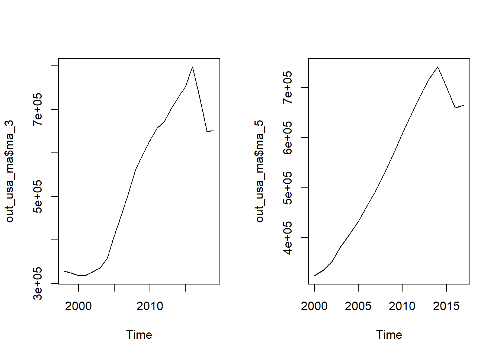
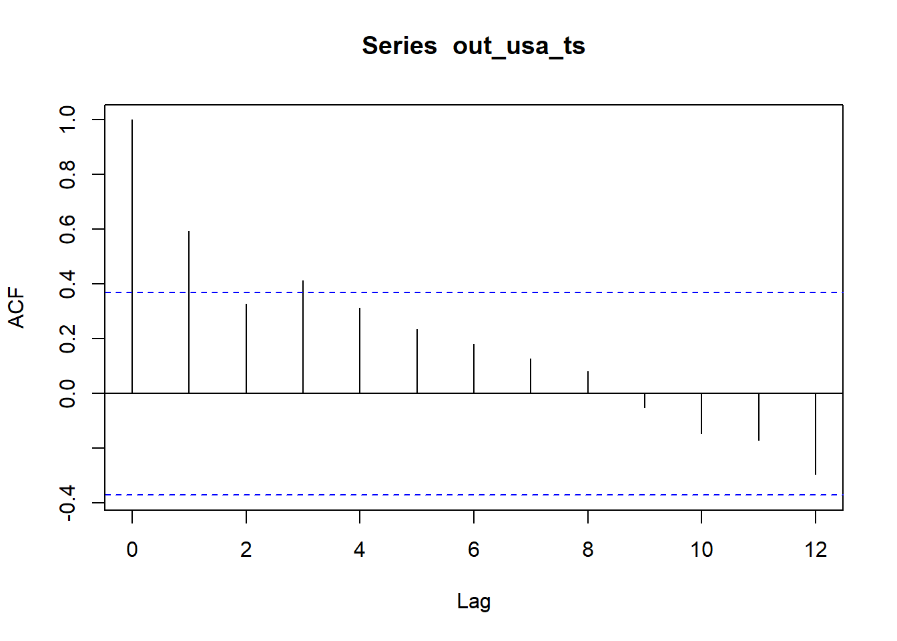
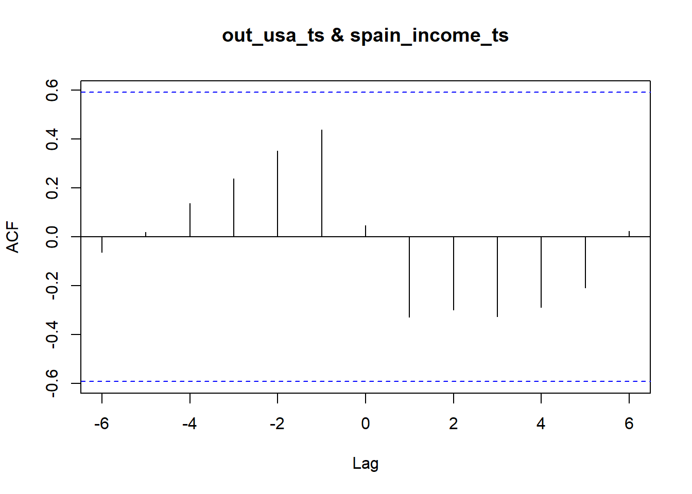

library(readxl)
library(TSstudio)
library(tidyverse)
library(forecast)
library(dplyr)
library(lubridate)
library(plotly)1 Univariate and Yearly
1.1 Spanish Outbound Visitors to USA
1.1.1 Loading Libraries
1.1.2 Importing the Dataset
out_world <- read_excel("data/out_world.xlsx", skip = 5)
excel_sheets("data/out_world.xlsx")[1] "Outbound tourism (All series)"1.1.3 Characterizing the TS Dataset
class(out_world)[1] "tbl_df" "tbl" "data.frame"head(out_world)# A tibble: 6 × 31
...1 SERIES `1995` `1996` `1997` `1998` `1999` `2000` `2001` `2002` `2003`
<chr> <chr> <dbl> <dbl> <dbl> <dbl> <dbl> <dbl> <dbl> <dbl> <dbl>
1 <NA> <NA> NA NA NA NA NA NA NA NA NA
2 Angola TFR NA 896 234 1059 781 1361 1569 2005 NA
3 Antigua… TFR NA NA NA NA NA NA NA NA NA
4 Argenti… TFR NA NA NA NA NA NA NA NA NA
5 Armenia TFR 140 40 43 82 87 56 168 191 235
6 Aruba TFR NA NA NA NA NA 746 769 780 683
# ℹ 20 more variables: `2004` <dbl>, `2005` <dbl>, `2006` <dbl>, `2007` <dbl>,
# `2008` <dbl>, `2009` <dbl>, `2010` <dbl>, `2011` <dbl>, `2012` <dbl>,
# `2013` <dbl>, `2014` <dbl>, `2015` <dbl>, `2016` <dbl>, `2017` <dbl>,
# `2018` <dbl>, `2019` <dbl>, `2020` <dbl>, `2021` <dbl>, `2022` <dbl>,
# `% Change 2022-2021` <dbl>1.1.4 Preprocessing
- Pivot the table to tidy the data:
names(out_world)[1] <- "countries"
out_world_pvt <- out_world |>
pivot_longer(cols = starts_with(c("19", "20")),
names_to = "years",
values_to = "tourists",
values_drop_na = FALSE)
head(out_world_pvt)# A tibble: 6 × 5
countries SERIES `% Change 2022-2021` years tourists
<chr> <chr> <dbl> <chr> <dbl>
1 <NA> <NA> NA 1995 NA
2 <NA> <NA> NA 1996 NA
3 <NA> <NA> NA 1997 NA
4 <NA> <NA> NA 1998 NA
5 <NA> <NA> NA 1999 NA
6 <NA> <NA> NA 2000 NA- Select and order the columns for the analysis:
out_world_adj1 <- out_world_pvt |>
select("countries","years","tourists") |>
relocate(years) |>
filter(countries == "United States of America")
head(out_world_adj1)# A tibble: 6 × 3
years countries tourists
<chr> <chr> <dbl>
1 1995 United States of America 302083
2 1996 United States of America 324822
3 1997 United States of America 328024
4 1998 United States of America 326339
5 1999 United States of America 362848
6 2000 United States of America 361177- Convert the date field in a Date object:
out_world_date <- out_world_adj1 |>
mutate(out_world_adj1,
years = as.Date(out_world_adj1$years,
format = "%Y"))
head(out_world_date)# A tibble: 6 × 3
years countries tourists
<date> <chr> <dbl>
1 1995-10-21 United States of America 302083
2 1996-10-21 United States of America 324822
3 1997-10-21 United States of America 328024
4 1998-10-21 United States of America 326339
5 1999-10-21 United States of America 362848
6 2000-10-21 United States of America 361177- Arrange the data by date:
out_world_ord <- out_world_date |>
arrange(years)
head(out_world_ord)# A tibble: 6 × 3
years countries tourists
<date> <chr> <dbl>
1 1995-10-21 United States of America 302083
2 1996-10-21 United States of America 324822
3 1997-10-21 United States of America 328024
4 1998-10-21 United States of America 326339
5 1999-10-21 United States of America 362848
6 2000-10-21 United States of America 361177- Set the start and end year of the ts:
start_point = year(min(out_world_ord$years))- Create a ts object:
out_usa_ts <- ts(out_world_ord$tourists,
start = start_point,
frequency = 1)
ts_info(out_usa_ts) The out_usa_ts series is a ts object with 1 variable and 28 observations
Frequency: 1
Start time: 1995 1
End time: 2022 1 - Plot the ts object:
ts_plot(out_usa_ts,
title = "Spanish residents visiting USA",
Xtitle = "Years",
Ytitle = "Thousands of visitors")1.1.5 Decomposition of TS
- Calculate MA of the ts object:
out_usa_ma <- ts_ma(out_usa_ts,
n = c(3,5),
plot = TRUE,
multiple = TRUE)A line object has been specified, but lines is not in the mode
Adding lines to the mode...
A line object has been specified, but lines is not in the mode
Adding lines to the mode...par(mfrow=c(1,2))
plot.ts(out_usa_ma$ma_3)
plot.ts(out_usa_ma$ma_5)
1.1.6 Correlation with its lags
- Use the
acffunction:
acf(out_usa_ts, lag.max = 12)
- We now plot the lags:
ts_lags(out_usa_ts)1.2 Spanish Outbound vs Income per Capita
We’re looking for the correlation between Spanish outbound visitors to USA and the income per capita of Spanish.
1.2.1 Importing the Income per Capita series
- We import the data set from the Spanish INE:
spain_income <- read_excel("data/renta_percapita_esp.xlsx", sheet = "RDB", skip = 3)- Characterize the ts dataset
class(spain_income)[1] "tbl_df" "tbl" "data.frame"head(spain_income)# A tibble: 6 × 43
...1 Valor...2 `Índice España...3` ...4 Valor...5 `Índice España...6`
<chr> <dbl> <dbl> <lgl> <dbl> <dbl>
1 Total 14542 100 NA 14580 100
2 Andalucía 11622 79.9 NA 11630 79.8
3 Aragón 15541 107. NA 15752 108.
4 Asturias, P… 14711 101. NA 14932 102.
5 Balears, Il… 14967 103. NA 15121 104.
6 Canarias 12393 85.2 NA 12482 85.6
# ℹ 37 more variables: `Tasa de Variación Interanual...7` <dbl>, ...8 <lgl>,
# Valor...9 <dbl>, `Índice España...10` <dbl>,
# `Tasa de Variación Interanual...11` <dbl>, ...12 <lgl>, Valor...13 <dbl>,
# `Índice España...14` <dbl>, `Tasa de Variación Interanual...15` <dbl>,
# ...16 <lgl>, Valor...17 <dbl>, `Índice España...18` <dbl>,
# `Tasa de Variación Interanual...19` <dbl>, ...20 <lgl>, Valor...21 <dbl>,
# `Índice España...22` <dbl>, `Tasa de Variación Interanual...23` <dbl>, …- Extract the date to be analysed:
spain_income_adj <- spain_income |>
select(cols = starts_with("Valor"))
spain_income_adj <- spain_income_adj[1,]- Name the first row with years and pivot the table:
# First we name the first row with years
ncol(spain_income_adj)[1] 11for(i in 1:ncol(spain_income_adj)){
colnames(spain_income_adj)[i] <- as.numeric(i+2009)
}
# Second, we pivot the table and convert years as Date
spain_income_pivot <- spain_income_adj |>
pivot_longer(cols = starts_with(c("20", "21")),
names_to = "years",
values_to = "income_per_capita",
values_drop_na = TRUE)spain_income_table <- spain_income_pivot |>
mutate(years = as.Date(spain_income_pivot$years,
format = "%Y"))
head(spain_income_table)# A tibble: 6 × 2
years income_per_capita
<date> <dbl>
1 2010-10-21 14542
2 2011-10-21 14580
3 2012-10-21 13802
4 2013-10-21 13801
5 2014-10-21 13867
6 2015-10-21 14431- Order the table:
spain_income_ord <- spain_income_table |>
arrange(years)- Create a ts object
start_year2 = year(min(spain_income_ord$years))
spain_income_ts <- ts(spain_income_ord$"income_per_capita",
start = start_year2,
frequency = 1)
ts_info(spain_income_ts) The spain_income_ts series is a ts object with 1 variable and 11 observations
Frequency: 1
Start time: 2010 1
End time: 2020 1 - Plot the 2nd ts object:
ts_plot(spain_income_ts)1.2.2 Cross-correlation analysis
- Make the two series have the same time frame:
out_usa_cc <- window(out_usa_ts, start = 2010, end = 2020)- Plot the two ts objects:
plot_ly(x = time(out_usa_cc),
y = out_usa_cc,
type = "scatter",
mode = "line",
name = "Spanish visitors to USA") |>
add_lines(x = time(spain_income_ts),
y = spain_income_ts,
name = "Spanish income per capita",
yaxis = "y2") |>
layout(title = "Correlation Analysis Outbound USA vs Income per Capita",
yaxis2 = list(overlaying = "y",
side = "right",
title = "Thousands",
showgrid = FALSE),
yaxis = list(title = "Thousands of visitors",
showgrid = FALSE),
legend = list(orientation = "h"),
margin = list(l = 50, r = 50, b = 50, t = 50, pad = 2))- Use the
ccffunction:
ccf(out_usa_ts, spain_income_ts, lag.max = 6)
- Plot the relationship between both ts objects:
ccf_plot(x = out_usa_ts, y = spain_income_ts, lags = 0:6)- Conclusion:
No correlation exists between the two ts objects.